DDPM原文阅读
Overview
Diffusion Model是一种Markov chain，也就是说t时刻的值只依赖于前一个时刻t-1的值。
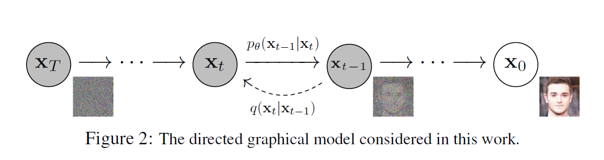
逆向过程：$x_T \to x_0$ 从高斯噪声一步步denoise生成图像的过程。
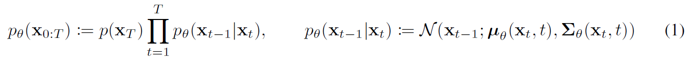
正向/扩散过程：$x_0 \to x_T$ 在图像上逐渐加噪声，经过T步后变成纯噪声。
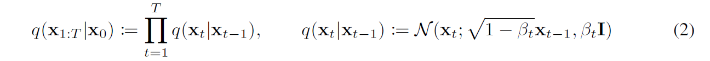
等价于下面这种写法，即第t步的图像等于t-1步的图像和采样的噪声的加权。
由于马尔科夫链的性质，每一步加噪过程都是独立的，已知 $x_0$ 就可以直接计算得到 $x_t$ 。
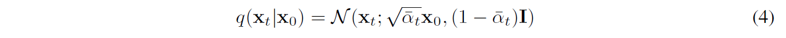
推导过程：
训练目标
目标：生成的图像的分布近似于数据集中的图像分布
Negative log likelihood：

改写成KL散度：q是在已知 $x_0$ 条件下的后验概率，$p_\theta$ 是要求的不知道 $x_0$ 的后验概率，优化KL散度来使得 $p_\theta$ 逼近 q。
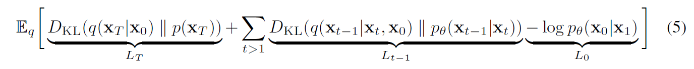
当 $x_0$ 已知时，可以得到：
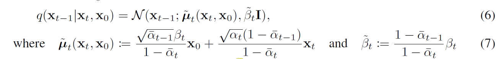
采样是不可导的，为了解决这个问题，进行重参数化（构造一个新的随机变量，把采样和参数分开）。
预测噪声而不是预测分布的均值，进一步简化为以下形式：
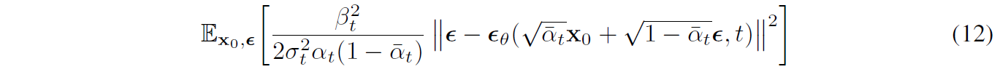
最终的目标函数：
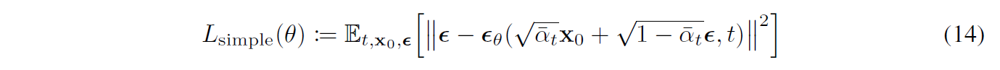
算法流程
用神经网络 $\epsilon_\theta$ 预测噪声，loss function：
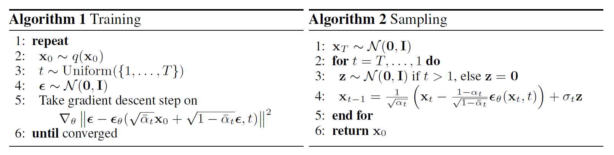
训练：正向过程每一步加的噪声都是已知的，把加了噪声的图片和t输入predictor，输出预测的噪声，和正向过程中加上的噪声计算L2 loss，梯度下降方式更新网络参数。
采样：从一幅噪声开始，经过T步去噪生成图像。每一步从 $x_t$ 减去预测的噪声，并采样一个噪声z，得到 $x_{t-1}$。t = 1时不用加噪音z，因为下一步要输出结果 $x_0$ 。
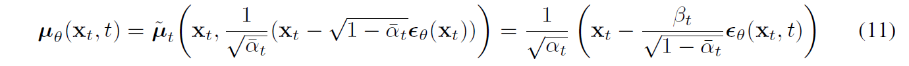
实验
正向过程的方差设定为常数，线性增长：$\beta_1=10^{-4},\beta_T=0.02$
逆向过程：U-Net backbone，position embedding，self-attention
生成图片质量
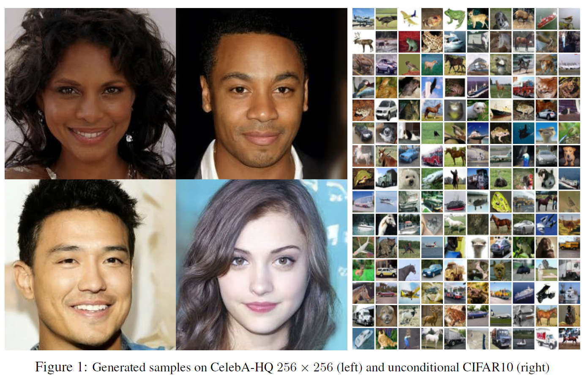
消融实验：逆向过程中，使用简化的目标函数，预测均值的训练效果很差，预测噪声的表现好很多；用variational bound作为目标函数时，预测均值和预测噪声的表现差不多。
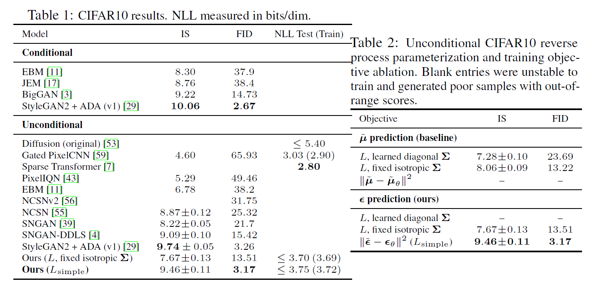
可学习的逆向过程方差会导致训练不稳定。
代码
拓展工作：DDIM
目标：加速DDPM
方法：假设期望满足分布
可以不连续地进行推理（不需要马尔可夫假设），跳过中间一些步；整个推导过程和方差无关。
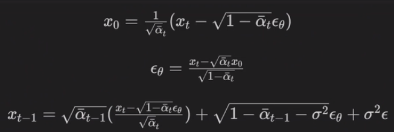
Appendix：生成模型
两堆样本，一堆是真实样本，另一堆是我们生成的样本
- 一一对应：diffusion/VAE
- 把它们混在一起，看能不能分出来：GAN（因为不是一一对应的，所以很难训练
模型介绍
Reverse Process: 从纯噪声开始，进行N步denoise，得到干净的图像
Denoise模块内部做了什么：Noise Predictor预测图像中的噪声，图片减去噪声得到输出
如何训练Noise Predictor？
- 在图像的每一个step加入随机采样的噪声，就能得到加了噪声的图片
- 这个噪声在训练时被作为每一步Noise Predictor的GT
- 这个过程叫Forward Process/Diffusion Process
Text-to-Image：在每个Denoise步骤中，输入加上一段文字描述；Noise Predictor工作过程可以由下图表示
深入理解算法
训练
- $\epsilon_\theta$是noise predictor，将带噪声的图和$t$作为这个函数的输入
- 实际上，不是每一步在前一步上加一点噪音，而是将clean image和噪声图做weighted sum
- 每一步的weight不同，随着$t$增大，噪声占比增大
采样
Maximum Likelihood Estimation：衡量两个distribution的相似程度。在数据中采样，也就是在一堆训练集的图片中随机抽取一部分图片。我们要最大化的目标是$\theta^*=\arg\max \limits_\theta \prod\limits_{i=1}^mp_\theta(x^i)$，也就是要得到生成图像$x^i$的几率更大的分布。
为什么可以通过优化这个目标函数来使两个distribution更相似呢？以下推导证明maximize likelihood等价于minimize KL divergence，而KL divergence越小说明两个distribution越相似：
如何计算weight？
如何最小化KL divergence？variance是固定的，所以我们在优化时要做的是让mean靠近目标distribution。
为什么需要sample？（即Algorithm 2中的$\sigma_t$项）如果不sample，只取几率最大的，那么每次生成的都是一样的内容。
- 语音合成也要sampling，通过在inference time加入dropout层，将variance引入
- Diffusion Model是一种autoregressive，加入一些随机性，结果才会好
完整的diffusion model
- text encoder：用来编码conditional text，一般是一个预训练好的模型；对结果影响很大（Imagen那篇文章进行了对比），好的text encoder可以帮助生成数据集中没有出现过的那些文字对应的图像
- decoder：将中间产物（小图/latent representation）还原成所需大小的图片，可以单独训练，不需要带标签的训练集；如果中间产物是latent representation，可以训练一个auto-encoder，将图像映射到latent space，能够提高计算效率，因为diffusion model很吃计算资源
- generation model：输入文字，输出图像，即text-to-image
常见的diffusion model
- Stable Diffusion
- DALL-E series (OpenAI)
- Imagen (Google)
- Parti
diffusion vs. VAE
VAE: lower bound of $\log P(x)$
DDPM: compute $P_\theta(x)$
Diffusion Model在语音、文字领域
for speech
WaveGrad
for text
由于文字是离散的，很难加noise；解决方法是在latent space（比如word embedding）中加noise
- Diffusion-LM
- DiffuSeq
或者不加Gaussian noise，而是加mask。从这里介绍一类方法，Mask-Predict，运用在图像上时，叫Masked Visual Token Modeling (MVTM)
- Training：先训练一个auto-encoder，可以将图像编码为latent representation，之后的一切处理都在latent representation上进行；把一些tokens变成masked tokens，训练一个predictor来预测完整的tokens。
- Generation：全部都是masked tokens的图输入decoder，把一些confidence score低的tokens再加上mask，重新生图
图像评估指标
FID：Frechet distance between the two Gaussians，值越小越好，假设两份采样是Guassians distribution
CLIP：Contrastive Language-Image Pre-Training，用400 million image-text pair训练出来的模型，CLIP score越大越好